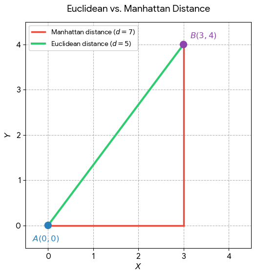

Overview
Common Geo Query Types
Almost every geo-search feature is one of these five query shapes:
- Distance query — find locations within a radius.
- Find restaurants within 2 km
- Find shops within 5 km
- Nearest-neighbor query — find the single closest object.
- Find the nearest hospital
- Find the nearest driver
- Polygon query — search inside a custom boundary.
- Users inside a delivery zone
- Users inside a city boundary
- Houses inside a drawn polygon
- Nearby search — list everything around a point.
- Show all drivers near me
- Route / path query — find the best path between two locations.
- Shortest road path from A to B
How Location Search Works Internally
Traditional database indexes like B-Tree are inefficient for geographical queries — they're built for exact matches and ordered ranges on a single value, not "everything within a curved region of 2D space."
Geospatial systems instead use specialized spatial indexes such as:
- R-Tree
- QuadTree
- KD-Tree
- GeoHash
- S2 Geometry
- H3 Hexagonal Indexing
All of them do the same fundamental job: partition the Earth into searchable regions so a query only has to look at a small, relevant slice of the data instead of scanning everything. The rest of this guide builds that idea up from scratch.
Popular Geo Technologies
Before building one from scratch, it's worth knowing what already exists — most production systems lean on one of these rather than writing their own spatial index.
SQL Databases
PostgreSQL + PostGIS supports:
- Distance queries
- Polygon search
- Nearest-neighbor search
- General GIS operations
SELECT *
FROM shops
WHERE ST_DWithin(
location,
ST_MakePoint(78.48, 17.38)::geography,
5000
);MySQL Spatial provides similar spatial indexing and geo operations, with a smaller feature set than PostGIS.
NoSQL and Search Engines
- Elasticsearch — fast geo-distance queries and geo aggregations, popular for search-heavy nearby-listing features.
- MongoDB — supports 2D indexes, 2dsphere indexes, radius search, and polygon search natively.
Google S2 Geometry
A hierarchical spherical geometry library. Used by Google Maps and by several Uber-like dispatch systems for cell-based indexing.
Uber H3
Divides the Earth into hexagonal cells instead of squares.
Advantages:
- Fast nearby search
- Easy clustering
- Heatmaps
- Efficient ride matching
Used in: Uber, Swiggy/Zomato-style systems, and analytics platforms.
GeoHash Overview
Encodes a (lat, lng) pair into a compact string, e.g. tdr1v9, where nearby coordinates share a common prefix. Phase 4 below builds a real implementation from scratch.
Mapping and Routing Engines
- OpenStreetMap — the open map data most of these engines are built on top of.
- OSRM (Open Source Routing Machine) — fast, open-source road routing.
- GraphHopper — a Java-based routing engine, useful when the rest of the stack is already JVM.
Phase 1: Distance Calculation
Every other phase in this guide depends on being able to answer one question correctly: how far apart are two coordinates? This phase builds two different answers — one for a flat plane, one for the curved surface of the Earth — and explains when each is appropriate.
Step 1: Euclidean Distance
Euclidean distance is the straight-line length between two points in a plane or multi-dimensional space:
Why square the difference and then take the square root?
- Makes negative differences positive. Distance shouldn't be negative.
- Combines perpendicular directions correctly. A 3-unit horizontal movement and a 4-unit vertical movement isn't a distance of
3 + 4 = 7— they're perpendicular components, so the actual straight-line distance is √(3² + 4²) = 5. - The square root undoes the squaring. After squaring, the result is in squared units: 3² + 4² = 25, which is effectively in
units². Taking the square root brings it back to the original unit: √25 = 5.
Worked example — two points A = (1, 2) and B = (4, 6):
Δx = 4 − 1 = 3
Δy = 6 − 2 = 4
B (4,6)
*
|\
4 | \ 5 ← distance
| \
| \
*----*
(4,2) 3
Pythagorean theorem: a² + b² = c²
⇒ 3² + 4² = d²
⇒ 25 = d²
⇒ d = √25 = 5Applied to latitude/longitude as a flat-plane approximation:
public double distanceKm(String lat1, String lng1, String lat2, String lng2) {
double a1 = Double.parseDouble(lat1);
double o1 = Double.parseDouble(lng1);
double a2 = Double.parseDouble(lat2);
double o2 = Double.parseDouble(lng2);
double avgLatRad = Math.toRadians((a1 + a2) / 2.0);
double dLatKm = (a2 - a1) * KM_PER_DEGREE;
double dLngKm = (o2 - o1) * KM_PER_DEGREE * Math.cos(avgLatRad);
double distance = Math.sqrt(dLatKm * dLatKm + dLngKm * dLngKm);
return distance;
}Step 2: Euclidean vs Manhattan Distance
Euclidean distance calculates the straight-line ("as the crow flies") distance; Manhattan distance calculates the grid-like ("city block") distance.
| Feature | Euclidean Distance | Manhattan Distance |
|---|---|---|
| Analogy | Flying directly over a landscape. | Navigating grid-based city blocks. |
| Formula (2D) | d = √((x₂−x₁)² + (y₂−y₁)²) | d = |x₂−x₁| + |y₂−y₁| |
| Shortest path? | Always the absolute shortest path. | Shortest path restricted to 90° turns. |
| Outlier sensitivity | Highly sensitive (differences are squared). | Less sensitive (differences are linear). |
| Dimensionality | Suffers from the "curse of dimensionality" in very high dimensions. | Often works well with high-dimensional data (e.g. text classification). |
| Typical use | Physical geography, continuous variables where diagonal movement is natural — e.g. K-Means Clustering. | Grid-restricted movement (chess pieces, city navigation) or high-dimensional space; handles outliers and noise better since differences aren't squared — e.g. KNN. |

Step 3: Haversine Distance
The Haversine distance exists because both Euclidean and Manhattan distance assume a flat, two-dimensional plane, whereas the Earth is a curved sphere.
If you used Euclidean distance to calculate the path between London and New York, your straight line would technically cut through the Earth's crust rather than follow its surface. The Haversine formula solves this by accounting for the Earth's curvature to find the true great-circle distance across the surface:
Because Euclidean distance assumes a flat surface, while locations on Earth sit on a curved surface (approximately a sphere).
public class HaversineDistanceCalculator implements DistanceCalculator {
private static final double EARTH_RADIUS_KM = 6371.0;
public double distance(double lat1, double lon1, double lat2, double lon2) {
double dLat = Math.toRadians(lat2 - lat1);
double dLon = Math.toRadians(lon2 - lon1);
double a = Math.sin(dLat / 2) * Math.sin(dLat / 2)
+ Math.cos(Math.toRadians(lat1))
* Math.cos(Math.toRadians(lat2))
* Math.sin(dLon / 2)
* Math.sin(dLon / 2);
double c = 2 * Math.atan2(Math.sqrt(a), Math.sqrt(1 - a));
return EARTH_RADIUS_KM * c;
}
}Worked example — two locations:
- Location A:
17.3850° N, 78.4867° E— Hyderabad - Location B:
13.0827° N, 80.2707° E— Chennai
You cannot simply do:
because latitude and longitude are angles, not distances. For example:
- 1° of latitude ≈ 111 km
- 1° of longitude ≈ 111 km at the equator
- 1° of longitude becomes progressively smaller as you move toward the poles
which is exactly the curvature problem Haversine corrects for.
Phase 2: Radius Search
Haversine solves the "distance between two points" problem, but it does not by itself solve the "find nearby locations efficiently" problem. This phase shows why a naive search doesn't scale, and introduces the first real optimization: the bounding box.
Step 4: The Naive Approach
Goal: find all locations within a radius — e.g. find all shops within 5 km.
If you have 10 million restaurants, you don't want to calculate Haversine distance against all 10 million of them.
Store database
----------------
Store 1 → (17.3850, 78.4867)
Store 2 → (17.4100, 78.5000)
Store 3 → (17.3600, 78.5100)
...
Store 10,000,000A naive query is:
For every store:
calculate Haversine(driver, restaurant)
if distance <= 5 km:
return driverComplexity: O(N) — fine for 10 locations, terrible for 10 million. So we optimize.
Step 5: Bounding Box Optimization
Before running exact distance calculations, reduce the search area to a rectangle first:
max latitude
↑
+---------------+
| |
| R |
| |
+---------------+
↓
min latitudeUsing the approximation 1 degree latitude ≈ 111 km:
So for a 5 km radius: Δlatitude ≈ 5/111 ≈ 0.045°. Longitude needs the extra cos(lat) correction because a degree of longitude covers less ground the further you are from the equator.
Then query only the rectangle:
WHERE latitude BETWEEN minLat AND maxLat
AND longitude BETWEEN minLon AND maxLonThis is much cheaper than calculating Haversine for every record.
Worked example — user at lat = 17.38, lon = 78.48, radius 5 km:
Δlat ≈ 5/111 = 0.045
lat range: 17.335 → 17.425
lon range: 78.44 → 78.52public class GeoUtils {
public double[] getBox(double lat, double lon, double radiusKm) {
/*
* We want to find all locations within `radiusKm`
* of the given latitude/longitude.
*
* Instead of calculating Haversine distance for every
* location in the database, we first create a
* rectangular "bounding box".
*
* maxLat
* ↑
* +---------------+
* | |
* minLon ← | ● | → maxLon
* | center |
* +---------------+
* ↓
* minLat
*/
/*
* Approximately 1 degree of latitude is 111 km.
*
* Therefore, if we want a radius of 5 km:
*
* latitude difference = 5 / 111
* ≈ 0.045 degrees
*
* This gives us the minimum and maximum latitude
* of our bounding box.
*/
double deltaLat = radiusKm / 111.0;
/*
* Longitude is different from latitude.
*
* At the equator:
* 1 degree longitude ≈ 111 km
*
* But as we move toward the poles, the physical
* distance represented by one degree of longitude
* becomes smaller. The correction factor is cos(latitude):
*
* km per degree longitude ≈ 111 × cos(latitude)
*
* Therefore:
* deltaLon = radiusKm / (111 × cos(latitude))
*/
double deltaLon = radiusKm / (111.0 * Math.cos(Math.toRadians(lat)));
/*
* Return:
* [0] = minimum latitude [1] = maximum latitude
* [2] = minimum longitude [3] = maximum longitude
*/
return new double[]{
lat - deltaLat, // minLat
lat + deltaLat, // maxLat
lon - deltaLon, // minLon
lon + deltaLon // maxLon
};
}
}A bounding box alone isn't an index, though — it only produces four numbers (minLat/maxLat/minLon/maxLon). It doesn't tell your program "here are the locations inside that box"; you still need somewhere fast to look that up, which is exactly what Phase 3 builds.
Phase 3: Spatial Indexing with a Grid
Step 6: Why Spatial Indexing
Stop scanning everything — this is where real geo databases begin.
Imagine a normal flat map, ignoring Earth's curvature for a moment:
Driver
*
*
Driver *
Restaurant
*
* *
Driver DriverIf the restaurant wants drivers within 5 km, instead of checking every driver, imagine a 5 km × 5 km-ish search area around it:
5 km
<-------------->
+----------------+
| |
| |
| R |
| |
| |
+----------------+
5 kmNow you only need to consider drivers inside that region — but you still need a fast way to find those drivers. That's what a grid index gives you.
Dividing the world into cells:
+----+----+----+----+----+
| | | | | |
+----+----+----+----+----+
| | | R | | |
+----+----+----+----+----+
| | | | | |
+----+----+----+----+----+
| | | | | |
+----+----+----+----+----+Every location belongs to a cell:
Driver A → Cell 892
Driver B → Cell 892
Driver C → Cell 893
Driver D → Cell 912If a restaurant is in Cell 892, you don't search the entire database — you search Cell 892 + neighboring cells. (This exact idea, taken to a hierarchical, string-encoded extreme, is what GeoHash does — see Phase 4.)
Never search only the exact cell. A restaurant and driver can be physically close but fall in different cells right at a boundary:
+---------+---------+
| | |
| | Driver |
| | * |
| R |---------|
| * | |
| | |
+---------+---------+so a real query always checks the center cell plus its 8 neighbors:
+-----+-----+-----+
| ↖ | ↑ | ↗ |
+-----+-----+-----+
| ← | R | → |
+-----+-----+-----+
| ↙ | ↓ | ↘ |
+-----+-----+-----+Putting it together — a restaurant requests nearby drivers within 5 km:
Restaurant coordinates
↓
Spatial index
↓
Find candidate locations (e.g. maybe 500 drivers)
↓
Exact distance calculation
↓
Drivers actually within 5 km (e.g. 120 of them)10,000,000 drivers becomes roughly 500 candidates via the spatial index, then ~120 after an exact Haversine check — a massive improvement over scanning all 10 million.
Why not just a naive latitude/longitude grid? You can, but the Earth's curvature complicates it: at the equator 1° longitude ≈ 111 km, but near the poles that shrinks dramatically, so a naive latitude × longitude grid isn't uniformly sized geographically. That's part of why production systems reach for GeoHash, H3, S2, R-Tree, QuadTree, or GiST/PostGIS instead of a raw grid at scale — though a plain grid, built next, is still an excellent way to learn the idea.
Step 7: Building a Grid Index
Your bounding-box code (Step 5) answers: "What geographic rectangle contains everything within approximately this radius?" A grid index answers: "How can I quickly find only the locations in that rectangle, without scanning the entire database?"
Without an index, given 1,000,000 locations and a bounding box:
SELECT * FROM location
WHERE latitude BETWEEN :minLat AND :maxLat
AND longitude BETWEEN :minLon AND :maxLon;Without a useful database index, this may still need to examine a huge number of rows — the bounding box tells you what you're looking for, not how to find it fast.
A grid index changes the storage structure itself. Suppose CELL_SIZE = 0.01° (roughly 1 km). Every location gets a cell key:
lat = 17.385
lon = 78.487
x = floor(17.385 / 0.01)
y = floor(78.487 / 0.01)
key = "1738:7848"int gridX = (int) (latitude * 100);
int gridY = (int) (longitude * 100);
String key = gridX + ":" + gridY;
// e.g. "1738:7848"and a hash map buckets locations by that key:
grid
├── "1738:7848" → [Location1, Location2, Location3]
├── "1738:7849" → [Location4, Location5]
├── "1739:7848" → [Location6]
└── ...Map<String, List<Location>> gridIndex;Insert:
gridIndex
.computeIfAbsent(key, k -> new ArrayList<>())
.add(location);Query — instead of scanning everything, find the user's cell and check its 8 neighbors (9 cells total):
User cell: 1738:7848
Search: 1737:7847 → 1739:7849 (only ~9 cells)Complexity: O(k) instead of O(n) — 10 million locations become just a handful of neighboring cells to check.
Full implementation:
public class GridIndex {
private final double CELL_SIZE = 0.01; // ~1km
private final Map<String, List<Location>> grid = new HashMap<>();
private String getKey(double lat, double lon) {
int x = (int) (lat / CELL_SIZE);
int y = (int) (lon / CELL_SIZE);
return x + ":" + y;
}
public void add(Location loc) {
String key = getKey(loc.getLatitude(), loc.getLongitude());
grid.computeIfAbsent(key, k -> new ArrayList<>())
.add(loc);
}
public List<Location> getNearby(double lat, double lon) {
int x = (int) (lat / CELL_SIZE);
int y = (int) (lon / CELL_SIZE);
List<Location> result = new ArrayList<>();
// check 9 surrounding cells
for (int i = -1; i <= 1; i++) {
for (int j = -1; j <= 1; j++) {
String key = (x + i) + ":" + (y + j);
if (grid.containsKey(key)) {
result.addAll(grid.get(key));
}
}
}
return result;
}
}Visually, getNearby inspects exactly these 9 cells around the query point R:
┌───────┬───────┬───────┐
│ -1,-1 │ -1,0 │ -1,+1 │
├───────┼───────┼───────┤
│ 0,-1 │ R │ 0,+1 │
├───────┼───────┼───────┤
│ +1,-1 │ +1,0 │ +1,+1 │
└───────┴───────┴───────┘so 1,000,000 locations become roughly 9 cells' worth of candidates — maybe 500 locations.
Two things worth knowing about this simple grid before moving on:
- `CELL_SIZE = 0.01°` isn't uniform. It's approximately true for latitude, but not for longitude — at Hyderabad's latitude,
0.01°of longitude is a bit less than 1.1 km, and that shrinks further near the poles. Fine for a learning project; not what a production system would ship. - `getNearby()` doesn't actually guarantee a radius. It means "locations contained in these 9 grid cells," not "locations within 1 km" — a location can sit inside one of those 9 cells while still being farther away than the intended radius:
+-------+-------+-------+
| | | |
| | | A |
| | R | |
+-------+-------+-------+
| | | |
| | | |
| B | | |
+-------+-------+-------+ A and B might be inside the 9 cells but farther away than the desired radius. That's why the grid index is only ever a candidate filter — the exact Haversine check that follows it is what actually enforces the radius.
Step 8: A Complete Nearby-Search Service
Putting bounding box, grid index, and Haversine together, in order:
STEP 1 Store latitude + longitude
STEP 2 Naive Haversine check on everything → O(N), too slow alone
STEP 3 Bounding box → reduces the geographic search area
STEP 4 Grid index → directly retrieves the relevant cells,
far fewer candidates than STEP 2
STEP 5 Haversine on the candidates only → removes false positives from STEP 4
STEP 6 Sort by distance → return the nearest locationspublic class LocationService {
private final GridIndex gridIndex = new GridIndex();
public void addLocation(Location loc) {
gridIndex.add(loc);
}
public List<Location> findNearby(double lat, double lon, double radiusKm) {
double[] box = BoundingBoxUtil.getBox(lat, lon, radiusKm);
double minLat = box[0];
double maxLat = box[1];
double minLon = box[2];
double maxLon = box[3];
List<Location> candidates = gridIndex.getNearby(lat, lon);
List<Location> result = new ArrayList<>();
for (Location loc : candidates) {
if (loc.getLatitude() < minLat || loc.getLatitude() > maxLat)
continue;
if (loc.getLongitude() < minLon || loc.getLongitude() > maxLon)
continue;
double dist = GeoDistanceUtil.distance(
lat, lon,
loc.getLatitude(),
loc.getLongitude()
);
if (dist <= radiusKm) {
result.add(loc);
}
}
return result;
}
}What you've built at this point:
- ✔ Bounding-box filtering
- ✔ Grid indexing
- ✔ Haversine accuracy
- ✔ A fast nearby-search API
The upgrades from here — GeoHash indexing, KD-Tree, Redis GEO caching, PostGIS migration, and a real routing engine — are what the rest of this guide covers.
Phase 4: GeoHash Indexing
Step 9: Why GeoHash
The grid index from Phase 3 works, but has real limitations at production scale:
- fixed-size cells
- uneven density handling
- poor distribution at scale
GeoHash solves these by giving you:
- ✔ hierarchical indexing (precision is just string length)
- ✔ prefix-based search
- ✔ distributed sharding (shard by hash prefix)
- ✔ fast range queries
Step 10: How GeoHash Encoding Works
GeoHash converts coordinates into strings, where nearby places share a common prefix:
(17.38, 78.48) → "tepgq"
(17.39, 78.49) → "tepgw"
tepgq
tepgw
tepgx ← all nearby, all share the "tepg" prefixThe encoding process:
- Start with the full range.
lat: [-90, +90],lon: [-180, +180]. - Encode bits. Repeatedly split the latitude range and the longitude range in half, alternating between them, appending a
1if the coordinate is in the upper half or a0if it's in the lower half, then interleave the two bit sequences. - Base32-encode. Convert the interleaved binary string into a Base32 string, 5 bits at a time.
Simplified example for lat=17.38, lon=78.48:
lat bits: 1 0 1 1 ...
lon bits: 0 1 1 0 ...
interleaved: 1 0 1 1 0 1 1 0 ...
↓
Base32
↓
tepgqMap<String, List<Location>> geoHashIndex;Why this is powerful: you can query using simple prefix matching —
LIKE 'tepg%'— instead of scanning the whole table.
Step 11: Implementing GeoHash
Algorithm:
- Split the latitude range
- Split the longitude range
- Encode the resulting bits
- Convert to Base32
public class GeoHash {
private static final int PRECISION = 12;
private static final char[] BASE32 = "0123456789bcdefghjkmnpqrstuvwxyz".toCharArray();
public static String encode(double lat, double lon) {
double[] latRange = {-90.0, 90.0};
double[] lonRange = {-180.0, 180.0};
StringBuilder binary = new StringBuilder();
boolean isEven = true;
for (int i = 0; i < PRECISION * 5; i++) {
if (isEven) {
double mid = (lonRange[0] + lonRange[1]) / 2;
if (lon > mid) {
binary.append("1");
lonRange[0] = mid;
} else {
binary.append("0");
lonRange[1] = mid;
}
} else {
double mid = (latRange[0] + latRange[1]) / 2;
if (lat > mid) {
binary.append("1");
latRange[0] = mid;
} else {
binary.append("0");
latRange[1] = mid;
}
}
isEven = !isEven;
}
return toBase32(binary.toString());
}
private static String toBase32(String binary) {
StringBuilder hash = new StringBuilder();
for (int i = 0; i < binary.length(); i += 5) {
String chunk = binary.substring(i, i + 5);
int idx = Integer.parseInt(chunk, 2);
hash.append(BASE32[idx]);
}
return hash.toString();
}
}Storing locations by hash:
public class GeoHashIndex {
private Map<String, List<Location>> index = new HashMap<>();
public void add(Location loc) {
String hash = GeoHash.encode(loc.getLatitude(), loc.getLongitude());
index.computeIfAbsent(hash, k -> new ArrayList<>())
.add(loc);
}
}Step 12: GeoHash-Based Search
A GeoHash search checks the exact cell plus neighboring prefixes:
user → geohash prefix → fetch nearby buckets
lat=17.38 lon=78.48 → tepgq
search: tepgq*, tepgp*, tepgw*public List<Location> searchNearby(String hashPrefix) {
List<Location> result = new ArrayList<>();
for (String key : index.keySet()) {
if (key.startsWith(hashPrefix)) {
result.addAll(index.get(key));
}
}
return result;
}Real use-case flow: a user searches "restaurants near me" → lat/lon → GeoHash → prefix lookup → candidate list, which is then refined using KD-Tree or Haversine — exactly what Phase 5 does next.
Phase 5: KD-Tree for Nearest-Neighbor Search
Step 13: Why KD-Tree
GeoHash (Phase 4) gives you a candidate list efficiently. A KD-Tree goes further and gives you:
- ✔ the exact nearest point
- ✔ fast
O(log n)search - ✔ dynamic spatial partitioning
instead of scanning every candidate:
(17.3)
/ \
smaller biggerComplexity: O(log n) on average.
Step 14: Building a KD-Tree
A KD-Tree alternates which dimension it splits on at each depth:
| Depth | Axis |
|---|---|
| 0 | latitude |
| 1 | longitude |
| 2 | latitude |
class KDNode {
Location location;
KDNode left;
KDNode right;
}if (depth % 2 == 0)
compare latitude
else
compare longitudeWorked example — locations A(17,78), B(18,77), C(16,79):
A (lat split)
/ \
C BBuild algorithm:
public class KDTree {
private KDNode root;
public KDNode build(List<Location> points, int depth) {
if (points.isEmpty()) return null;
int axis = depth % 2;
points.sort((a, b) -> axis == 0
? Double.compare(a.getLatitude(), b.getLatitude())
: Double.compare(a.getLongitude(), b.getLongitude()));
int median = points.size() / 2;
KDNode node = new KDNode();
node.location = points.get(median);
node.left = build(points.subList(0, median), depth + 1);
node.right = build(points.subList(median + 1, points.size()), depth + 1);
return node;
}
}Step 15: Nearest-Neighbor Search
Algorithm:
- Traverse the likely branch first (go left or right depending on the query point).
- Track the nearest distance found so far.
- Backtrack and check the other branch if it could still contain a closer point.
This is exactly how nearest-driver matching works in a real dispatch system.
Worked example — query 17.5, 78.4 against the tree built above: go to A, check B and C, update the running best. Complexity: O(log n).
public class KDTreeSearch {
private Location best;
private double bestDist = Double.MAX_VALUE;
public Location nearest(KDNode node, double lat, double lon, int depth) {
if (node == null) return best;
double dist = distance(lat, lon,
node.location.getLatitude(),
node.location.getLongitude());
if (dist < bestDist) {
bestDist = dist;
best = node.location;
}
int axis = depth % 2;
KDNode next;
KDNode other;
if (axis == 0) {
if (lat < node.location.getLatitude()) {
next = node.left;
other = node.right;
} else {
next = node.right;
other = node.left;
}
} else {
if (lon < node.location.getLongitude()) {
next = node.left;
other = node.right;
} else {
next = node.right;
other = node.left;
}
}
nearest(next, lat, lon, depth + 1);
// check if we must explore the other side too
if (shouldCheckOther(node, lat, lon, axis)) {
nearest(other, lat, lon, depth + 1);
}
return best;
}
private boolean shouldCheckOther(KDNode node, double lat, double lon, int axis) {
return true; // simplified for concept
}
}KD-Tree complexity: average O(log n), worst case O(n) (an unbalanced tree degrades toward a linear scan).
Step 16: Combining GeoHash and KD-Tree
This is the real production flow, combining everything so far:
Step 1 — User request: "find nearest restaurants"
Step 2 — GeoHash filter: 10,000,000 → 5,000 candidates
Step 3 — KD-Tree search: 5,000 → top 10 nearest
Step 4 — Haversine final check: exact ranking of those 10
Final result:
1. Biryani Hub (1.2 km)
2. Spice Villa (1.6 km)
3. Food Street (2.0 km)Phase 6: Persistence
Everything so far has lived only in memory. This phase persists it to disk.
Step 17: File Storage
Store as JSON:
[
{
"id": 1,
"lat": 17.3,
"lon": 78.4
}
]Simple, human-readable, and easy to debug — but not the fastest option.
Step 18: Custom Binary Format
Store directly as bytes for much faster reads:
[id][lat][lon]DataOutputStream out = new DataOutputStream(file);
out.writeLong(id);
out.writeDouble(lat);
out.writeDouble(lon);Why: faster disk reads, more compact storage, and more cache-friendly than parsing JSON on every load.
Phase 7: Concurrency
A real service needs to support many simultaneous reads and writes safely. Reach for:
ReadWriteLock— cheap reads, exclusive writesConcurrentHashMap— for the index structures themselves (grid buckets, GeoHash buckets)
Phase 8: Production-Grade Features
Step 19: Polygon Search
Check whether a point lies inside an arbitrary polygon — "find users inside a city boundary," "restaurants inside a delivery zone."
Algorithms: ray casting, or the winding number method.
Ray casting, in short:
Draw a ray from the point → infinity
Count how many times it crosses the polygon's edges
Odd number of crossings → inside
Even number of crossings → outsideStep 20: Routing
Represent the road network as a graph:
node → road → nodeA → B → C → DEach road (edge) has a weight — distance, time, or live traffic. Real routing engines run:
- Dijkstra — shortest path, guaranteed optimal
- A\* — heuristic-guided, usually faster in practice than Dijkstra for a single query
Step 21: Dynamic Updates
Drivers move continuously, so the index needs to move with them:
- delete the driver from their old cell/bucket
- insert them into their new cell/bucket
Step 22: Caching
- Redis GEO — a production-grade geo index that already implements most of this guide (radius queries, sorted-by-distance results) as a Redis data structure.
- In-memory cache — for hot queries (e.g. "restaurants near downtown") that get asked repeatedly.
Recommended Learning Path
Level 1 — must learn:
- Coordinates
- Haversine distance
- Radius search
- Bounding box
Level 2:
- Grid indexing
- GeoHash
- KD-Tree
Level 3:
- R-Tree
- H3
- S2 Geometry
Final Notes and Complete System Design
A modern geo-search system usually combines:
- Spatial indexes
- Distance formulas
- Routing algorithms
- Distributed storage
- Caching systems
This is what powers applications like Google Maps, Uber, Swiggy, Zomato, delivery systems, fleet tracking, and GIS analytics platforms in general.
Put together, the complete pipeline built across this guide looks like:
User Request
↓
Bounding Box Filter (Phase 2)
↓
GeoHash / Grid Index (Phase 3 / Phase 4)
↓
KD-Tree Search (Phase 5)
↓
Haversine Final Ranking (Phase 1)
↓
Sorted Nearby ResultsEverything above the line is about narrowing down candidates as cheaply as possible; everything at the bottom is about getting the final answer exactly right. That split — cheap filtering, then exact refinement — is the one idea worth carrying out of this entire guide.